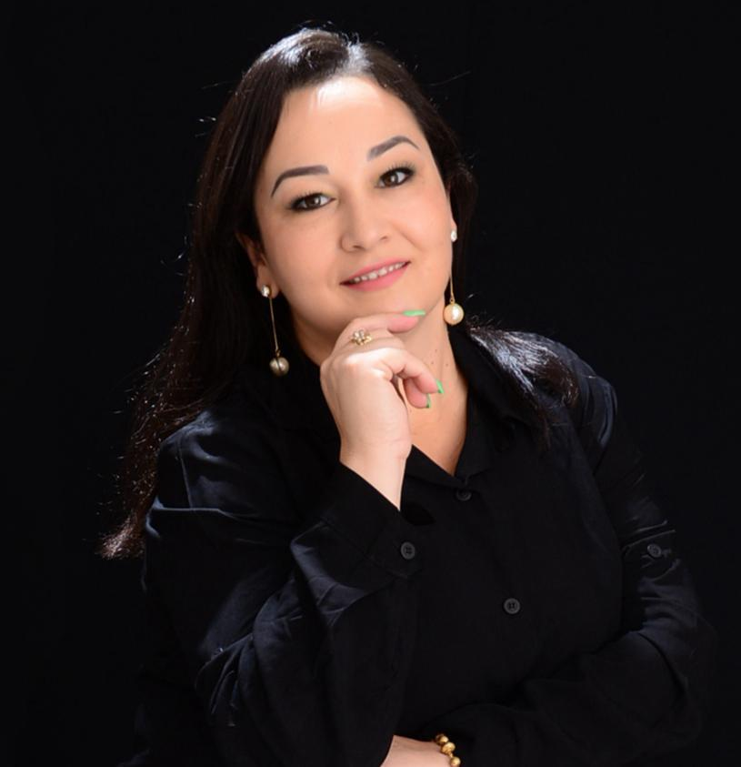
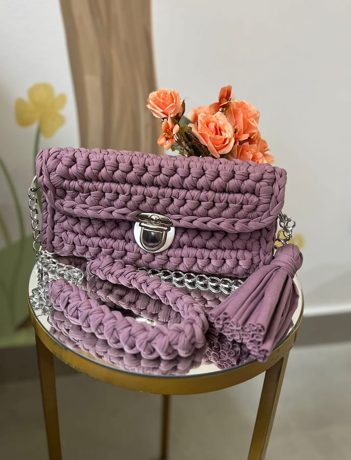
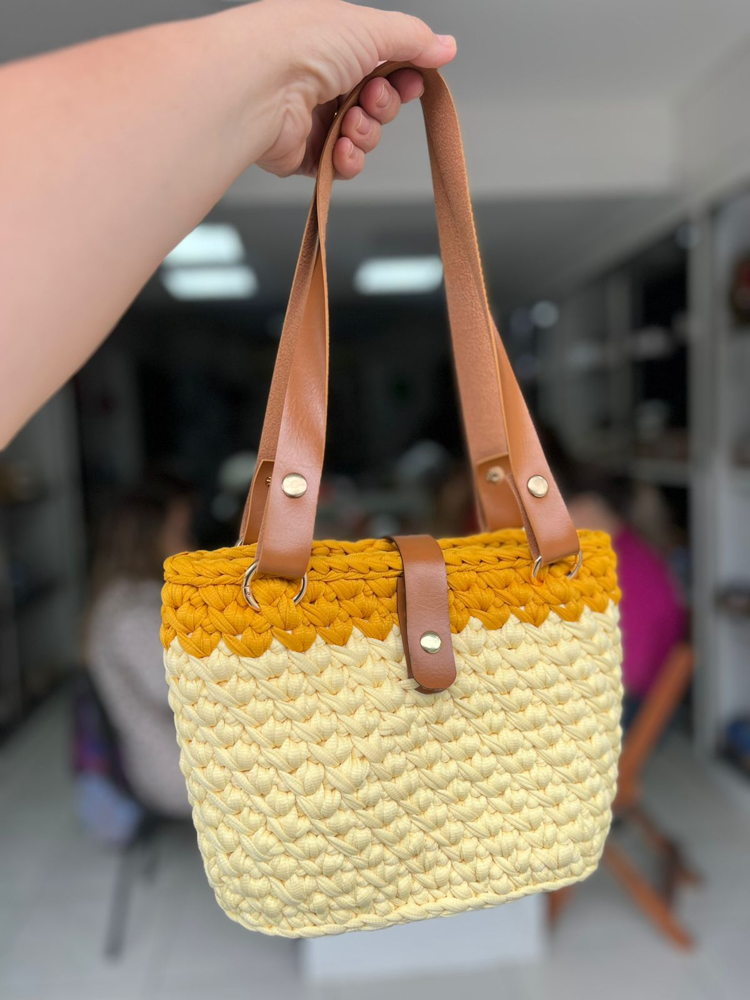

Aulas em Ipatinga e Timóteo, onde a técnica vira renda, o tempo vira presença e cada ponto é um respiro para a mente.

Desde os primeiros passos até aqui, o Fios que Curam nasceu de batalhas vencidas e do cuidado de Deus em cada etapa. O que começou como um refúgio pessoal se tornou um chamado: ensinar, acolher e abrir caminhos para outras pessoas.
Inêz transformou o crochê em uma ponte — entre quem ela foi e quem se tornou, e entre mulheres que buscam um tempo para si, uma comunidade e uma nova fonte de renda. Aqui, cada aluna é recebida pelo nome, com paciência e propósito.
Mais do que técnica, ela ensina um jeito mais leve de viver. E ainda há muito por vir.
O crochê é o meio, não o fim. Por trás de cada peça existe um processo de desaceleração, autoconhecimento e reconstrução.
Quando as mãos se ocupam com cuidado, a mente encontra descanso.
O artesanato como ferramenta de desaceleração, foco e bem-estar mental. Um respiro no meio da correria.
Capacitação técnica que gera autonomia financeira, novas oportunidades e orgulho do próprio trabalho.
Um espaço de pertencimento e conexão, especialmente para mulheres que querem crescer juntas.


Talvez você se pergunte: “será que eu consigo aprender crochê?” A resposta é simples — sim, você consegue.
Há mais de 6 anos aperfeiçoamos um método próprio, pensado para ensinar de um jeito simples, acolhedor e prático — mesmo para quem nunca segurou uma agulha. Mais de 1.000 alunas já descobriram aqui uma nova habilidade, um tempo de autocuidado, novas amizades e, para muitas, uma nova fonte de renda.
Você aprende no seu ritmo, com acompanhamento próximo e em um ambiente acolhedor, onde cada aula é uma experiência de aprendizado, bem-estar e transformação. As vagas são limitadas, justamente para garantir a atenção e o cuidado que cada aluna merece.
Se você sente que é hora de fazer algo por você, venha transformar fios em conquistas e descobrir tudo o que também é capaz de criar.
Histórias reais de quem encontrou no crochê um novo respiro — e, para muitas, uma nova renda.
Atendemos presencialmente na região de Ipatinga e Timóteo. Clique aqui para marcar sua aula experimental.
Tire dúvidas, conheça os horários e reserve sua vaga.
Falar com a Inêz no WhatsApp Seguir no InstagramVocê já é aluna da Fios que Curam?
Ainda não — é minha primeira vezEscolher unidade, horário e marcar a 1ª aula Sim, já sou aluno(a)Entrar no portal do aluno(a)